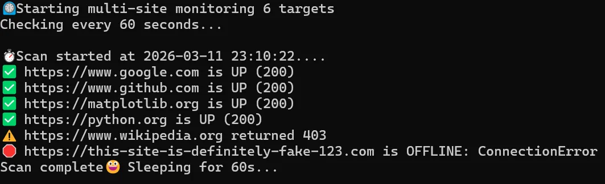

Site Uptime Pinger


A robust, lightweight Synthetic Monitoring tool built with Python. This script tracks the availability and latency of multiple web services, providing real-time console feedback and persistent, rotated logs for historical analysis.
📸 Screenshots

🚀 Features
Multi-Target Monitoring: Check an unlimited number of URLs in a single loop.
Intelligent Logging: Uses Python's logging module with RotatingFileHandler to prevent disk space exhaustion.
Error Resiliency: Gracefully handles DNS failures, timeouts, and connection errors without crashing.
Cross-Platform Ready: Explicitly configured for UTF-8 to support emojis and special characters on Windows and Linux.
DevOps Best Practices: Implements modular functions, type hinting, and environment-specific configurations.
🛠️ Installation & Setup
1. Clone the Repository
git clone https://github.com/yourusername/site-uptime-pinger.git
cd site-uptime-pinger
2. Create a Virtual Environment
# Windows
python -m venv venv
.\venv\Scripts\activate
# Mac/Linux
python3 -m venv venv
source venv/bin/activate
3. Install Dependencies
pip install -r requirements.txt
📈 Usage
Simply edit the sitestowatch list in pinger.py and run:
python src/pinger.py
Log Output Example Logs are saved to uptime.log in the following format: 2026-03-02 16:15:00 - INFO - ✅ https://google.com is UP (200)
🏗️ Project Structure
site-uptime-pinger/
├── src/
│ └── pinger.py # Main monitoring logic
├── uptime.log # Auto-generated log file (Rotated at 5MB)
├── requirements.txt # Project dependencies
└── README.md # Project documentation
🛣️ Roadmap Features
[ ] Email Alerts: Integration with SMTP to send daily uptime reports.
[ ] Dockerization: Create a Dockerfile to allow the script to run in any containerized environment.
[ ] Dashboarding: Basic CLI-based dashboard using the rich library for better visuals.
[ ] Response Time Tracking: Measure and log latency (ms) for each request.
Built by Roy Peters Click here to contact me